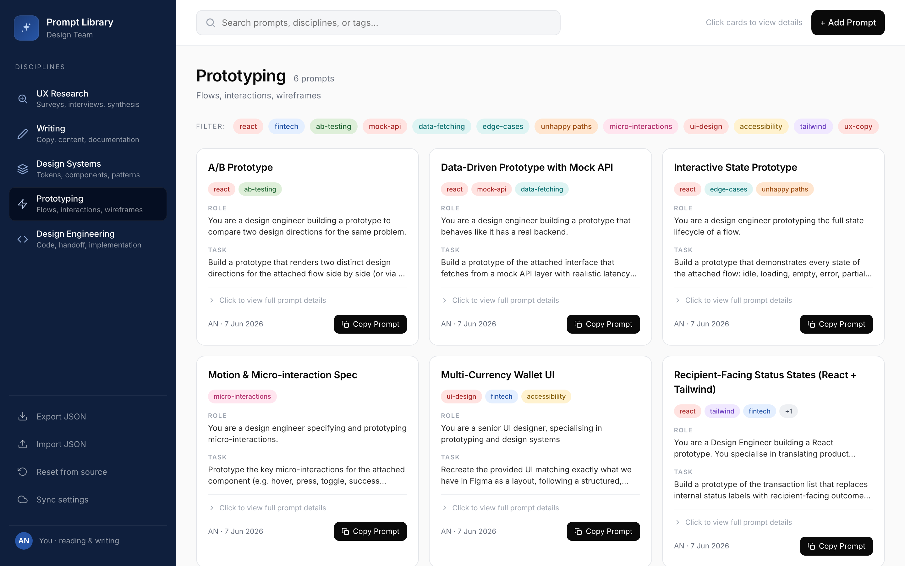
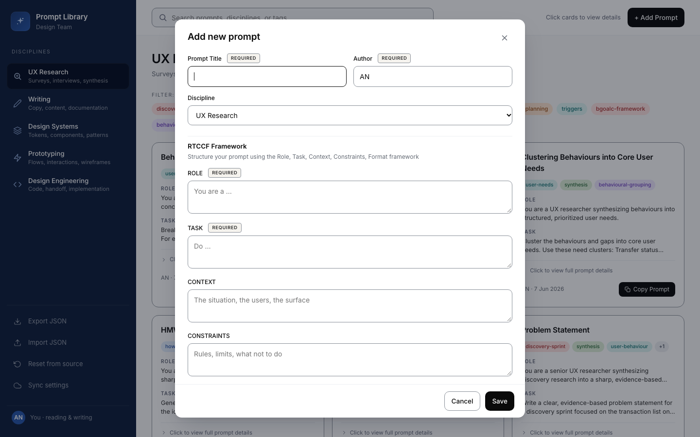
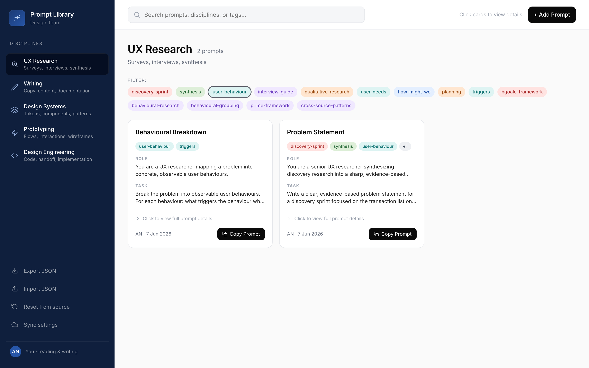
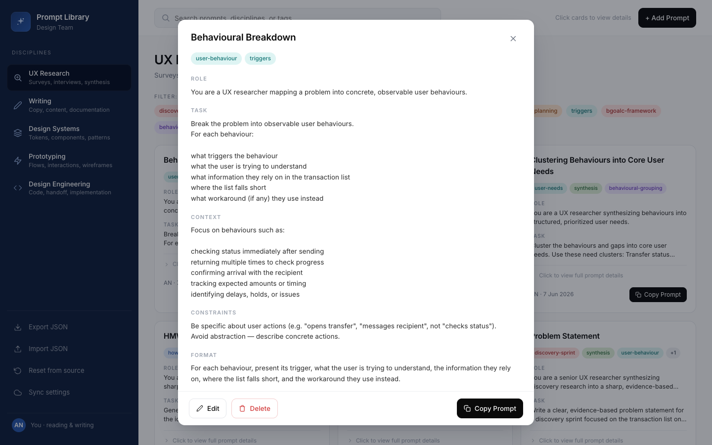
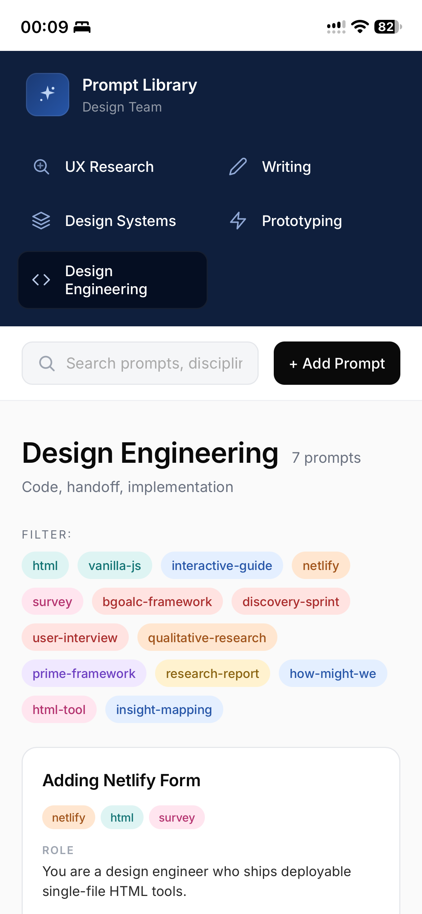
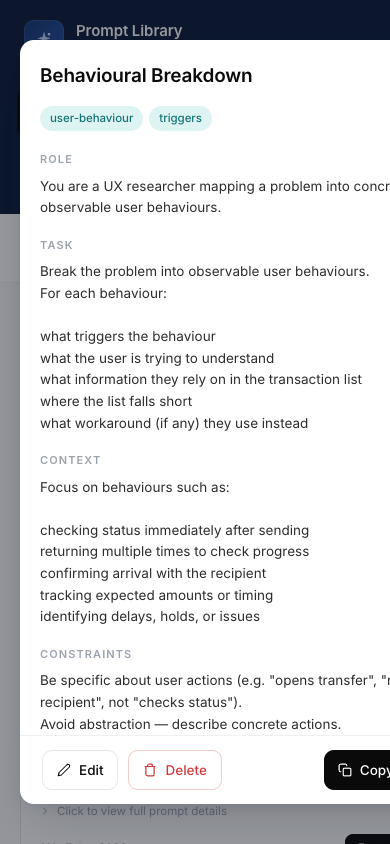
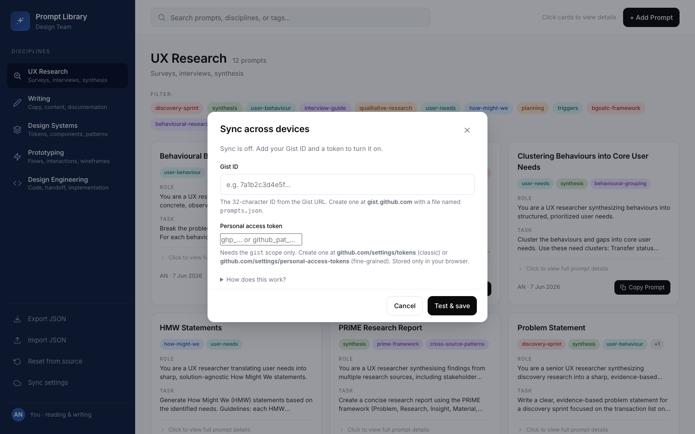

The library in motion — browse, filter, open, add, sync. One tiny web page. Same shape every time.
Internal team tool · 2026 · live
One prompt library. On your phone, your laptop, and inside the robot that helps you work.
WhenQ1 2026 · liveused by the design team daily
What's inside33 prompts · 5 disciplines · one shape
My roleSolo · design, build, the prompts themselves
In one lineA tiny library. One place. One shape. Lives on phone, Mac, and inside the robot.
01 · The problem
Everyone on the team wrote prompts a different way. Same designer, different shape every time.
A prompt is just a note to the robot that tells it what to do. On a good day, you write a clear one and the robot gives you a useful answer. On a bad day, you write a sloppy one and the robot guesses — and you spend the next hour fixing a bad guess.
The team was writing dozens of prompts a week. Each person wrote them differently. The same person wrote them differently on different days. New teammates had nowhere to look for “that prompt Anna used in September”. The robot kept guessing. We kept fixing.
“If everyone used the same shape for a prompt — who the robot is, what to do, what it needs to know, what not to do, what to hand back — the first answer would almost always be useful. The library is what holds those shaped prompts.”
02 · What I changed
Five rooms. One shape. Chips you can stack. A copy button that gives you the whole thing.
Change 01 · Rooms by discipline
Everything the team does fits under one of five hats
UX Research · Writing · Design Systems · Prototyping · Design Engineering. Each one is its own room in the sidebar. Walk into the room you need, nothing else is in your way.
Everyone on a design team does these five things, in some mix. Making each one its own room means you can walk into “Prototyping” and only see prompts about prototypes — not a mash-up of surveys and component audits at the same time.
Prototyping · 6 prompts

Change 02 · One shape for every prompt
Role, Task, Context, Constraints, Format
Every prompt in the library has the same five slots. Who the robot should be. What it should do. What it needs to know. What not to do. What to hand back. If you fill the five slots, you have a prompt. If you don’t, you have a wish.
Robots give better first answers when you tell them who they are, what you want, what they need to know, what’s off-limits, and what to hand back. Keeping the five slots in the same order, every time, means you (and a new teammate on day one) know exactly where to look and exactly where to write.
Add new prompt · one shape

Change 03 · Chips you can stack
Tap a chip. The list narrows.
Each prompt has a few coloured tags. Tap “user-behaviour” and only the user-behaviour prompts remain. Tap it again and they’re back. No search bar fight.
Search works for typing out a word. Chips work for pointing at a shape of problem. People reach for prompts both ways — the library lets them.
Filter: user-behaviour · 2 prompts

Change 04 · The copy button
One tap. The whole prompt. On your clipboard.
Open a prompt, hit “Copy Prompt”. The whole thing — Role, Task, Context, Constraints, Format — is on your clipboard with the labels. Paste it wherever you work. The robot gets the same shape every time, from every person on the team.
Taking a prompt out of the library should feel like copying a phone number. If it takes more than one tap, people start writing their own from memory — and the shape drifts.
Behavioural Breakdown · full prompt

03 · Lives everywhere
On your phone. On your Mac. Inside the robot that helps you work.
The library is one tiny web page. That means it can live wherever the web lives. I taught it three new tricks so the same 33 prompts are always in reach, in the shape the team already knows.
📱
On your phone
Tap “Add to Home Screen”. The library installs like a real app — icon on the home screen, no browser bar, no sign-in. Edits you make on the bus are there when you open the Mac.
💻
On your Mac
Install the same web page to the Mac dock. One click away, every workday. No separate login, no “where did I save that prompt?”.
🤖
Inside the robot
The same 33 prompts show up as the robot’s own menu. In Claude Code, type “/ux-research” and it reads the matching prompt, asks you only the bits it needs, and runs. No copy-paste in the middle.

Phone — the five rooms collapse into a row of icons.

Phone — open a prompt, Copy, done.
Edit here, show up there
There’s no backend. The library is just a web page. But I added a small sync trick: paste a private key into Sync Settings on the phone and the Mac, and edits you make in one place quietly show up in the other a second later. Nothing is public. Nothing is shared with the team by default — only with yourself.
Sync across devices · settings

04 · What it saves
One hour a week per designer. A month of design work back in the team’s hands over a year.
These are honest estimates, not metrics from a dashboard. I’ll show the real numbers once the team has been on it for a quarter — but here’s where I expect the value to show up.
For me
Write once. Use everywhere.
The prompt I used to build this library is now inside the library. A nice closed loop — the thing explains itself.
For the team
No more hunting
A new teammate’s first day can be “open the library, pick a UX Research prompt, run it”. No more “where’s that prompt Anna used in September?”.
For the robot
Better first answers
Same shape every time. The robot stops guessing because it’s been told who to be, what to do, what to know, what not to do, and what to hand back — every single time.
For the company
Shorter time to a first useful answer
Fewer tokens burned re-writing the same prompt. Shorter path from a design question to an answer a designer can actually use.
What I’d change next
A “runs” count on each prompt. The prompts the team actually uses rise to the top. The ones no one touches get re-written or quietly dropped.
Attach a tiny test to every prompt. One example input, the expected shape of the answer. If a model update breaks a prompt, the library catches it on the next sync — not in a meeting.
A shared “team” mode. Right now sync is private to each designer. A second, opt-in key would let the team share a core set everyone starts from — like a design system for prompts.
05 · Try it live
Open it now. Nothing to install. Nothing to sign in to.
The live library opens with the 33 real prompts the design team uses. Browse, filter, open a prompt, hit Copy. Add your own if you want — they live in your browser, private to your device.
Open the library in Safari on your phone. Tap Share, then “Add to Home Screen”. The library installs with an icon, no browser bar, works offline.
Install on your Mac
Open the library in a Chromium browser (or Safari 17+). From the address bar, choose “Install app”. It lives in the dock like any other app.
Use it from the robot’s menu
If you work in Claude Code, the same 33 prompts are available as a menu. Type the room name and the robot reads the matching prompt — it asks only for the bits that change between runs.
Every prompt in the library follows the same five slots — Role, Task, Context, Constraints, Format. The next project uses the exact same shape to run a full six-artifact research sprint.